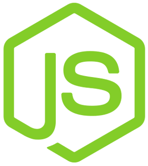
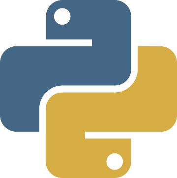

Who I Am
I am Fortas Mohammed Abdeldjalil Mokhtar, call me Abdeldjalil. I'm a dreamer, a creative and a lifelong learner. I'm an Algerian Computer science student and a motivated junior developer.
I write e-solutions for my society mainly in Education, Social or Health fields in Markdown on a secret repository for ideas, before writing them in JavaScript, Node.js, Python, Django, Java or C.
I like to leave my mark in Tech world by anything I can do, for that I participated in translating many projects in Arabic, from Desktop applications to Mozilla's web pages.
Translation to Arabic became my hobby, it was the first and the easiest way to contribute
to open-source projects, before I learned how to code and I started contributing in small projects by adding micro-features, by fixing bugs or at least reporting them. I used to help people in forums, Facebook groups, and in StackOverflow.
I also share my experience and my love of Computer science and programming by animating workshops, or speaking at my club Team Open Minds events.
When I go AFK, I love cycling on a XC bike, trying to loose weight in a GYM or playing soccer.
Education
Oran University1, Ahmed Ben Bella
Bachelor degree, in
My skills
-

- 
-

-

- 
-

-

Showcase
Projects
ASSES: Exam questions bank, and exams generator with a CBA platform [Private]
This project was my final project for obtaining Bachelor degree (PFE, in French). ASSES stands for Algerian Scalable and Simple-to-use Examination System. It's a bank of exam questions, that teachers fills and where they can generate and edit exams. The exams could be exported and printed or passed to a e-Examination system, where students passes the exams and the system loggs the answers & cheating attempts (when student changes the window, or tries to checkout the page's source...)
Techs & skills tags: UML Node.js + Express Mongoose + MongoDB Passport authentication Vue.js 2 jQuery EJS Twitter Bootstrap 3 SimpleMDE Socket.io Marked Heroku
FreeCodeCamp backend projects [Codes]
These projects & challenges were for obtaining back-end developement certification from FreeCodeCamp. I was asked to build microservices, and projects such as : Pinterest clone, URL shortner microservice, Stock market charts.
Techs & skills tags: Node.js + Express Mongoose + MongoDB Vue.js 2 jQuery EJS Twitter Bootstrap 3 billboard.js Masonry.js Heroku Socket.io
Expert System for children Diabetes Diagnosis [Code]
That was a project for Ontologies and Knowledge representation class in University. We were asked to build an expert system.
We made this using PyKnow library.
And we offered a Web API in order to test our expert system. The web API was built using Node/Express. This project was made thanks to a great help from my friends: Chawki Benchehida for guiding my in my first steps using PyKnow and for Nesrine Rekkab.
Techs & skills tags: Python PyKnow Expert System Node.js + Express
For clients
Sidi El Houari foundation platform [Private]
This project was realized with my friends Bahri Aimene and Loukil Reda. That was a multilingual application where I worked on both front-end and back-end, SEO, i18n and l10n.
Techs & skills tags: Python + Django SEO i18n + l10n Arabization Leaflet.js (Map frontend) Twitter Bootstrap 3
SARL Etoile Plastique's static website [Link]
A static website for a plastic company. The client asked for a static website in four languages: English, French, Spanish, Arabic.
It's a showcase of their products, so there's a product page with a search bar that filters products by category to by searching in different languages.
In this project, I used Oriented Object concepts of JavaScript, I needed to define Product with attributes and methods.
Techs & skills tags: Twitter Bootstrap 3 Vue.js 2 jQuery JavaScript OOP Leaflet.js Owl Carousel Arabization i18n + l10n
Visa form filler (Chrome extension) [Private]
A Chrome extension for some travel agencies for filling a certain appointment booking form for obtaining visa, the website opens for just few minutes due to the heavy load, so travel agencies needed to automatically fill booking forms to pass the maximum of requests. With this extension they can prepare the profiles and fill all the informations of their clients, then they can simply fill the form by selecting the client's name.
Techs & skills tags: Chrome Extensions Vue.js 2 JavaScript
Libraries, boilerplates and frameworks
Tchamba.Random [Code | pypi/tchamba]
The idea was a joke with friends, the word tchamba means something random. And my friends were telling jokes about having a library of random things, I realized it.
Tchamba.Random is a real random data generating library, you can use it for fun, or if you're testing your application or if you're making a game.
The library is available on PyPi packages, and installable via pip install tchamba
Techs & skills tags: Python
Mini Express boilerplate [Code]
Boilerplate for starting Node/Express projects. With plugins and User schema pre-configured. This template helped me in many projects, since it took care of boring tasks like configuring passport. This boilerplate contains thins that I needed in the majority of the projects I worked on lately.
Techs & skills tags: JavaScript jQuery Node.js + Express Mongoose Passport.js (local, Twitter, Facebook) EJS MVC
Nightly.js [Code]
A zero Javascript dependency for enabling night (dark) mode in user interfaces, customizable and extensible, developers using this library can override the default dark colors and choose their own colors, they can even write plugins for their prefered frameworks, for the moment, Nightly.js has only a Bootstrap3 plugin which can apply dark theme to bootstrapped web pages.
Techs & skills tags: JavaScript
Telefonilo.js [Code]
Tiny JavaScript library, for making Phone call links, for modern
mobile web browsers, this library is not needed, phone numbers are automatically
detected, but on older ones, it's not, and if you manage to add a
<a href='tel:XXX'> it may be clickable by non-mobile users
and the link will lead to a wrong web page.
The name is from telefonillo means Call him (in Algerian dialect),
and I found that it means Door Phone
in Spanish.
TLDR: JS library for creating "click to call" links for mobile users.
Techs & skills tags: JavaScript
Django Simple Settings [Code]
A simple and a reusable Django application for providing a simple Site Settings model that has only one instance which is available via a template tag.
Techs & skills tags: Python Django
Oktob.js [Code]
A library that helps in replacing characters from/to Arabic, its API allows it to be extensible and to have many usages,
as an example use case: In a form you have fields where your users are obliged to enter their names in Arabic and in English, Oktob.js helps you
in replacing the characters depends on the user's keyboard layout (For example, for AZERTY: a will be replaced with ض)
Techs & skills tags: JavaScript
Contributions
Coding
- SMValidator (JavaScript)
- Sarah Assistant for SemicodeOS (Python)
- Google and Udacity course on Accessibility (CSS)
- Algorithms example (Python, JavaScript)
- EVNotify (JavaScript)
- Minesweeper (JavaScript)
- ongaku-desktop (JavaScript, Electron)
Internationalization and localization
- Nirsoft utilities
- Liri Browser Contributed in Arabic and French localization
- Material Design theme for hexo
- BeeWare project homepage
- More contributions on: Transifex(Mozilla, VLC, Tor...) and Launchpad(Code::Blocks, Ubuntu Builder...) or my old blog.
Other
- StackOverflow
- Mozilla Support
- Found an exploit (File and Image Upload) on Albaghdadiya script
- Logo design: GDG DevFest2015, Team Open Minds and Bloeddiens project.
Blogs and Articles
-
ﻻ تسأل لتسأل، فقط إسأل
هذا المنشور ترجمة (بتصرف) لـ Don't ask to ask, just ask ، و قد وددت إعادة مشاركته باللغة العربية بعدما صرت أشمئزّ من بعض الأسئلة في المجموعات (Groups) و المنتديات العربية و حتى الأجنبية. تجد منشورات مثل ”هل يوجد محترفي Java هنا ؟ لديّ سؤال “ أو ”ممكن مساعدة من محترفي JavaScript ؟“ و ما شابهها من الأسئلة، فأحيانا كأن من يسأل ”هل يوجد خبراء XYZ هنا ؟“
-
كمبتدئ: الروابط الصلبة و الروابط اللينة(مرنة) Soft Links and Hard links
في أولى خطايَ نحو تعلم GNU/Linux أقوم بقراءة كتاب سطر أوامر لينكس. و في الصفحات 54-55-56 وجدت كلاما يعتبر جديدا عليَّ بحكم أنني مجرد newbie لذا بحثت و حاولت إعادة صياغة المفهوم و تبسيطه من أجلي و في هذا المقال أحاول أن أشارككم ما فهمته عن مفهوم Hard links الروابط الصلبة و Soft links .
-
I’m learning front-end development, again — Part 1 (Browser rendering optimization)
I thought that front-end development was only about making beautiful user interfaces, responsive and mobile friendly websites that loads fast, until I started reading about some of its advanced concepts and challenges, I learned more about browser rendering optimization, website performances and web accessibility. In this article I’m going to share some notes I took when learning browser rendering optimization.
Organizations and Clubs
Google Developer Group Oran (Inactive)
Member of GDG Oran, a group of new Techs enthusiasts. This Community aims to develop creativity and multidisciplinary values besides its main field related to Computer Science.
Team Open Minds Oran (2015 - Jully, 2018)
We created this club for encouraging people to use open-source, and free software or at least make them pay for the paid software instead of cracking, our group also teach people programming, and make students discover new technlogies.
Our main goal is to motivate students to discover and learn new technologies, and to share our knowledge and experience.